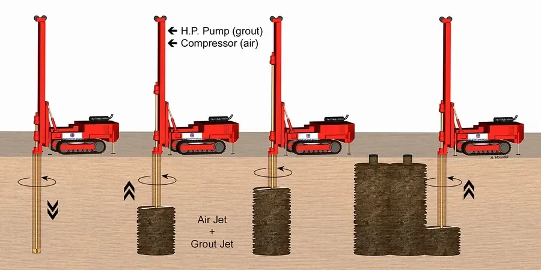

Boise sits at the edge of the Snake River Plain, where the alluvial deposits from the Boise River create a mixed bag of gravels, sands, silts, and occasional clay lenses. The water table here is often shallow near the river corridor, which complicates any deep ground improvement work. In our experience, jet grouting design must account for these fast-changing soil profiles — what works in the North End may not transfer to a site in the Bench. We have seen too many designs fail because the contractor assumed uniform conditions. That is why we insist on a thorough site investigation before setting any jet grouting parameters. Pairing that with a deep soil mixing approach in softer zones gives the client a reliable fallback when soil behavior is uncertain.

A jet grouting design in Boise must treat every soil lens as a variable, not a constant — that is where most mistakes happen.
Methodology and scope
Local considerations
The most frequent error we see in Boise is assuming that jet grouting will behave identically in the coarse gravels of the valley floor and the finer silts of the foothills. A contractor once designed for a 1.2 m column diameter based on a nearby project, but the actual site had a thick cobble layer that prevented the jet from reaching full radius. The result was undersized columns and a six-week remediation delay. Our design process starts with a detailed soil profile from test holes and, when needed, a [MASW survey](/masw-vs30/) to map stiffness variations across the site. Without that, you are gambling with the foundation budget.
Applicable standards
ASCE 7-16, IBC 2021, ASTM D5092-16, FHWA-HRT-15-067
Associated technical services
Design parameter selection
We determine optimal grout mix, injection pressure, nozzle geometry, and lift/rotation speeds based on site-specific soil conditions and target column strength.
Trial column program
We supervise the installation of test columns, core them for UCS testing, and adjust design parameters before full-scale production begins.
Verification and quality control
Our team monitors real-time injection data, conducts pressuremeter tests on completed columns, and provides a detailed as-built report for the engineer of record.
Typical parameters
Frequently asked questions
What is the typical cost range for jet grouting design in Boise?
For a standard commercial project in Boise, jet grouting design and verification services typically range between US$1,930 and US$6,470. The final cost depends on the number of trial columns, the depth of treatment, and the complexity of the soil profile. We provide a detailed scope-based quote after reviewing the preliminary geotechnical report.
How does Boise's high groundwater affect jet grouting design?
Shallow groundwater in areas like the Boise River corridor can wash out the grout before it sets if the injection parameters are not adjusted. We mitigate this by using a higher grout viscosity, reducing the water/cement ratio to around 0.8:1, and increasing the injection pressure to maintain column integrity. We also specify a shorter gel time to prevent dilution in saturated zones.
What testing confirms the jet grouting columns meet design strength?
We core the trial columns at 7 and 28 days for unconfined compressive strength testing. For larger projects, we supplement with pressuremeter tests to measure the column's modulus and lateral stiffness. The results are compared against the target UCS and modulus values set during the design phase, and we adjust the grout mix or injection parameters if needed before production begins.